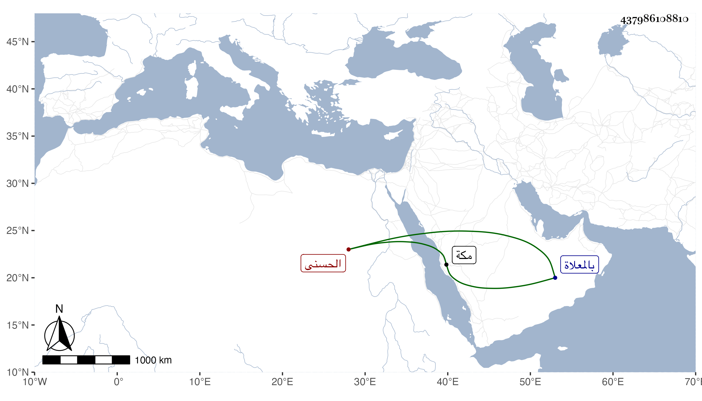

0902Sakhawi.DawLamic.ITO20230111-ara1.EIS1600.437986108810
Biography ID: 437986108810
557
فاطمة ابنة السيد بركات بن حسن بن عجلان الحسنى ، تزوجها ابن عمها ادريس بن أبي القسم بن حسن بن عجلان في سنة خمس وخمسين كانت لجلالتها عند أخيها السيد محمد ينتسب اليها في الحروب ويقول أنا أخو فاطمة . ماتت خارج مكة في جمادى الأولى سنة خمس سبعين ودفنت بالمعلاة . أرخها ابن فهد .
